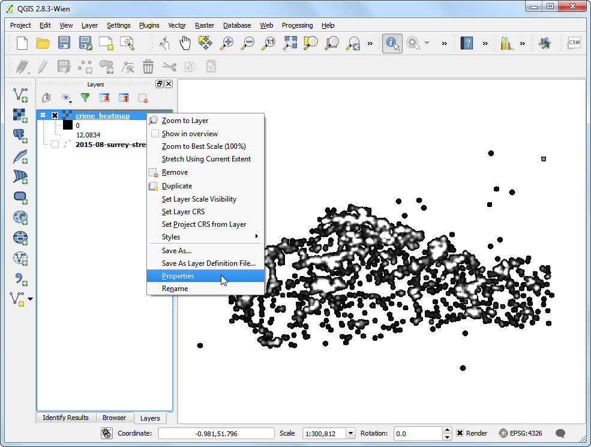
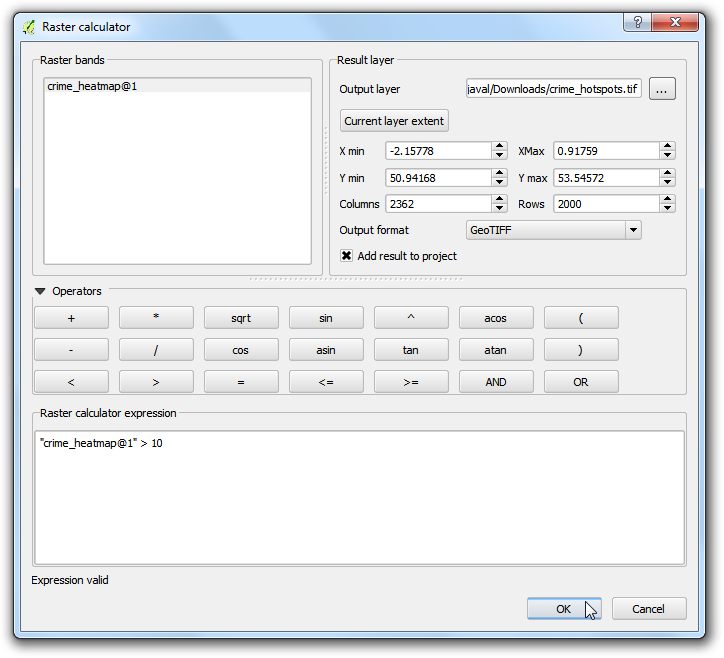
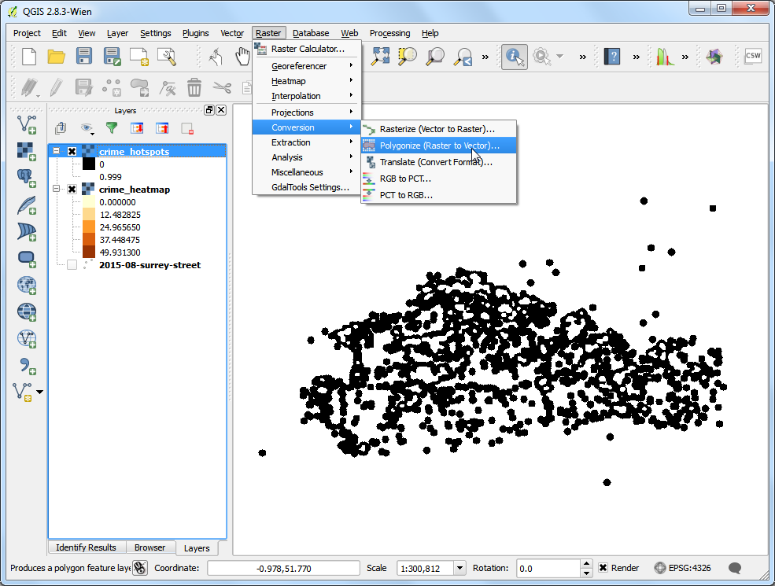

Heatmaps maken
[ Download PDF A4 Letter ]
Heatmaps zijn een van de beste manieren van het visualiseren van dicht op elkaar gelegen puntgegevens. Heatmaps worden gebruikt om eenvoudig clusters te identificeren waar een hoge concentratie activiteit is. Zij zijn ook handig voor het doen van clusteranalyse of hotspotanalyse.
Overzicht van de taak
We zullen werken met een gegevensset van misdaadlocaties in Surrey, UK voor het jaar 2011 en hotspots van misdaad vinden in de county.
Procedure
Pak, om te beginnen, de gegevens uit in een map. De gegevens staan in de indeling CSV. We zullen deze gegevens in QGIS importeren. (bekijk Werkbladen of CSV-bestanden importeren. voor meer details). Klik op .

Blader naar het bestand police-uk-crime-data-surrey.txt op uw computer en open het. Selecteer CSV (comma separated values) als de bestandsindeling. U zult zien dat de kolommen Easting en Northing automatisch wordne geselecteerd als X- en Y-velden. Zorg er voor dat u de optie Ruimtelijke index gebruiken is geselecteerd omdat dat de bewerkingen op deze laag versneld. Klik op OK.

U zou enkele fouten kunnen zien. Voor het doel van deze handleiding kunt u die negeren. Klik op Sluiten.

Vervolgens dient u een Coordinate Reference System (CRS) te kiezen. Als u de beschrijving voor de gegevens leest zult u zien dat de ruimtelijke verwijzing voor deze gegevens is British National Grid. Kies OSGB 1936 / British National Grid als het CRS. Klik op OK.

Nu zult u de gegevens zien die zijn geladen in QGIS.

Zoom een beetje in om de gegevens beter te zien. U zult zien dat de gegevens vrij dicht zijn en het moeilijk is om een idee te krijgen waar een hoge concentratie punten is. Dit is waar een heatmap handig zou kunnen zijn.

- To create the heatmap, you need to enable a core plugin named Heatmap. See Plug-ins gebruiken to know how to enable built-in plugins. Once you have enabled the plugin, go to .
Waarschuwing
The Heatmap plugin has a bug in QGIS 2.8.1. See this post for workarounds.

Kies, in het dialoogvenster Heatmap Plugin, crime_heatmap als de naam in Uitvoer raster. Voer 1000 kaarteenheden in als de Straal. Straal is het gebied rondom elk punt dat zal wordne gebruikt om de heat te berekenen die een pixel ontvangt. Selecteer Geavanceerd om de grootte van de uitvoer van onze heatmap te specificeren. Voer 100 in als Celgrootte X en Celgrootte Y. Klik op OK.

Als proces eenmaal is voltooid, zult u een heatmap in grijswaarden zien worden geladen in het kaartvenster.

Laten we onze heatmap er eens meer laten uitzien als een traditionele heatmap zoals u die vaker ziet. Klik met rechts op laag van de heatmap en klik op Properties.

Selecteer, op de tab Stijl, Enkelbands pseudokleur als het Rendertype. Selecteer vervolgens, onder het gedeelte Min/max waarden laden, Actueel (langzamer) als de Nauwkeurigheid en klik op Laden. Dit xal de heatmap scannen en de minimale en maximale pixelwaarden vinden. Deze waarden zullen worden gebruikt om een toepasselijk kleurbereik te genereren. Selecteer, in het gedeelte Genereer nieuw kleurenpalet, YlOrRd (Yellow-Orange-Red) als het kleurbereik en klik op Classificeren. Klik op OK.

Nu zult een meer aantrekkelijke heatmap-achtige rendering van de laag zien. U kunt het gereedschap Objecten identificeren gebruiken en klikken op ene willekeurige pixel in de heatmap. U zult de pixelwaarde in het resulterende pop-upvenster zien. Deze pixelwaarde is een meting van hoeveel punten uit de bronlaag binnen de gespecificeerde straal liggen ( in ons geval - 1000m) rondom de pixel.

Nu heeft u uw heatmap. Hij is bruikbaar voor visuele interpretatie, maar niet erg bruikbaar als u de resultaten wilt gebruiken voor analyses. Vaak zult u de hotspots willen identificeren waar een hoge concentratie van punten is. We zullen nu proberen dergelijke hotspots te identificeren met behulp van deze heatmap. Ga naar .

U zult eerst een drempelwaarde moeten bepalen. Alle pixelwaarden boven die drempelwaarde zullen worden geacht zich in een cluster te bevinden. Laten we de waarde 5 gebruiken voor deze gegevens. In het dialoogvenster Rasterberekeningen, noem de Resultaatlaag crime_hotspots. Dubbelklik op crime_heatmap@1 onder het gedeelte Raster banden en het zal worden toegevoegd aan het tekstgebied Rasterberekening expressie. Voltooi de expressie als “crime_heatmap@1” > 5. Selecteer het vak naast Voeg resultaat toe aan project en OK.

een nieuwe laag zal worden toegevoegd aan QGIS. Deze laag heeft pixels met de waarden van ofwel 0 of 1. Alle pixels in de invoerlaag waar de pixelwaarde groter was dan 5 heeft nu de waarde 1 en alle resterende pixels zijn 0. Klik op .

Noem het uitvoerbestand crime_hotspots_vector. Selecteer het vak naast Veldnaam en ook Na afloop in kaartvenster laden. Klik op OK.

Als de conversie is voltooid zal er nog een andere laag zijn toegevoegd aan QGIS. Dit is de vector-weergave van de clusters die werden gemaakt in de vorige stap. De laag bevat clusters met zowel de waarden 0 als 1. Laten we de waarden 0 er uit filteren om de clusters van de hotspots te krijgen. Klik met rechts op de laag en selecteer Open attributentabel.

Klik, in de Attributentabel, op Selecteer objecten m.b.v. reguliere expressie.

Voer de expressie in als “DN” = 1 en klik op Selecteren. Klik vervolgens op Sluiten.

In het hoofdvenster van QGIS zult u enige, in geel, geaccentueerde objecten zien. Dat zijn de objecten die overeenkomen met onze query. Klik met rechts op de laag en selecteer Selectie opslaan als....

Noem de uitvoerlaag crime_clusters. Selecteer het vak naast Voeg opgeslagen bestand toe aan kaart en klik op OK.

Daar zijn ze. De laatste laag bevat de hotspots die zijn geëxtraheerd vanuit de heatmap. Deze clusters is de intelligence die is verzameld vanuit de ruwe gegevens en bruikbare inzichten kan verschaffen en ook kunnen dienen als invoer voor verdere acties.